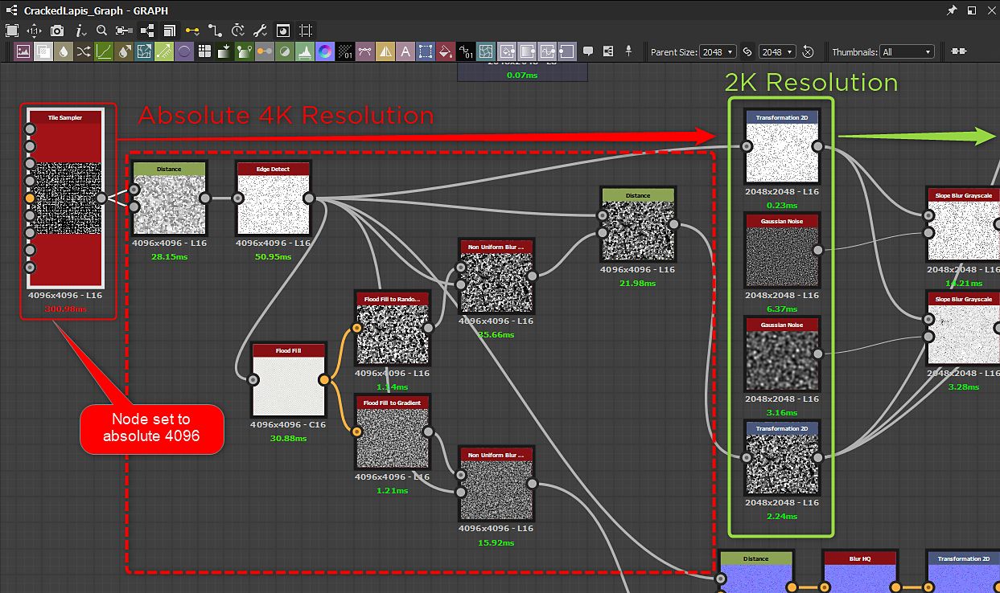

The more complex your Substance materials are, the more processing power is needed to render them. Substance materials must therefore strike a balance between complexity and rendering speed. This is especially important if they will be used in real-time graphics applications, such as games.
When creating your own custom Substance materials, be sure to check the following optimization guidelines.
Substance Designer Optimization Guidelines
A major caveat to look out for are nodes that have an absolute resolution of 4K or higher.
Pay careful attention to the resolution and relative-to-parent resolution settings!
High values will seriously affect performance, so consider how the material is likely to be used and whether you can reduce the data sizes involved.
The Substance CPU engine can compute at 4K, but it is very slow and can cause an integration to hang or possibly crash.
In the following example, a Tile Sampler node's output size is set to Absolute 4096. It causes several nodes downstream to compute at 4K before being down-scaled for the final 2048 output resolution.
